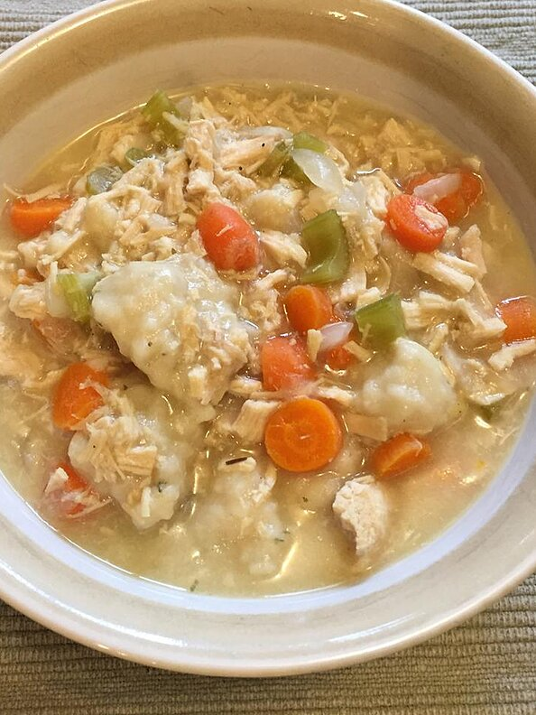

Chicken Dumplings

Description
My mother is one of the best cooks I know. She makes stews where we mostly find dumplings in them. We never eat things from packages or microwaves and you sure could taste what food was.
That's the only way I cook today - I don't use any electronic gadgets to cook with except an electric stove.
Ingredients
- 1 cup all-purpose flour
- 2 teaspoons baking powder
- 1 teaspoon white sugar
- ½ teaspoon salt/li>
- 1 tablespoon margarine
- ½ cup milk
Steps to cook:
- Stir together flour, baking powder, sugar, and salt in medium size bowl. Cut in butter until crumbly. Stir in milk to make a soft dough.
- Drop by spoonfuls into boiling stew. Cover and simmer 15 minutes without lifting lid. Serve.
- To make parsley dumplings, add 1 tablespoon parsley flakes to the dry ingredients.